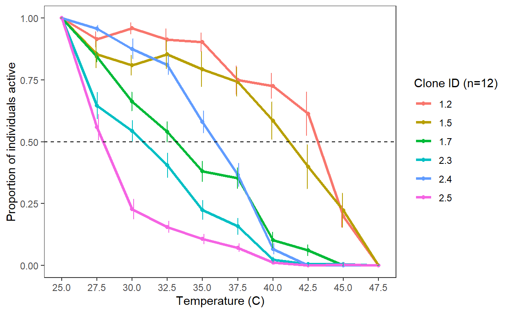
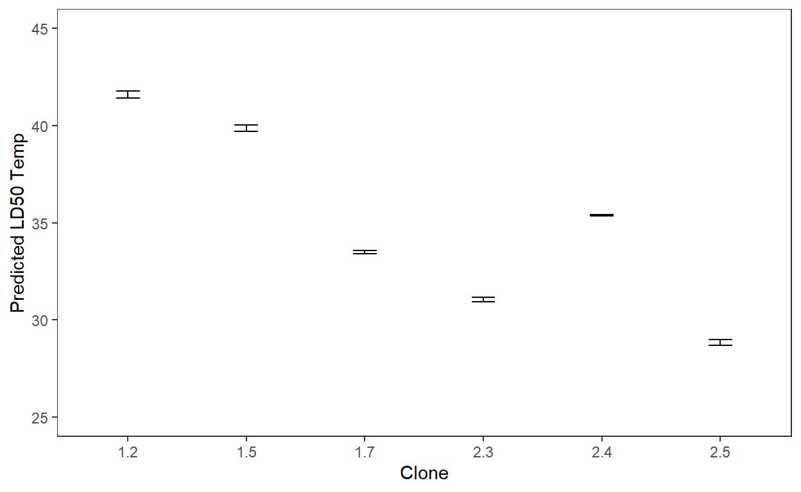

An organism’s interaction with its environment is the fundamental premise of its ecology, and abiotic factors like temperature are important drivers of individual ecology as well as microevolution in populations. Thermal tolerance is an organism’s capacity to withstand extreme temperatures. If a population has diversity in traits that contribute to thermal tolerance, the potential exists for rapid evolution in response to novel changes in environmetal temperature. The aim of this project is to observe differences in response to thermal stress among different groups of rotifers (as a very broad over-simplification). However, the response of rotifers (specifically, Habrotrocha rosa) to changes temperature is not well documented.
My goal in this preliminary experiment is to determine the thermal limits of Habrotrocha rosa by gradually increasing temperature then observing how the rotifers respond. To do this, rotifers will be transferred into a 24-well tissue culture plate inside a climate-controlled growth chamber. Every 30 minutes, rotifer response will be scored and the temperature in the growth chamber will be increased.
Attempt 1
June 27, 2024
Methods
First, I used my culture preparation script to generate an organized table detailing what volume should be added from each clonal stock culture to achieve uniform density and equal volume in each plate well. Three clones from each of two separate leaf water samples are chosen based on stock culture density. The source cultures for these clones were all housed in 50 mL macrocentrifuge tubes, which were vortex mixed for 5 seconds before sampling 0.3 uL for counting under an inverted compound microscope.
Each clone is replicated four times. Clone replicates are randomly distributed within the plate.
Show code
sourceCultures <- data.frame(
Source = c("Stock", "Pop1", "Pop1", "Pop1", "Pop1", "Pop1"),
CloneID = c("1.2", "1.5", "1.7", "2.3", "2.4", "2.5"),
Count = c(25,133,31,103,77,71))
countVol = 0.3 # volume counted in plate
finalDensity = 80 # rotifers per mL
finalVolume = 0.3 # stock culture volume, mL
# The volume of source culture to be transferred to destination in microliters (uL)
VolumeFinal <- ((finalDensity * finalVolume)/ (sourceCultures$Count / countVol)) *1000
sourceCultures <- cbind(sourceCultures, VolumeFinal)
# I couldn't find any 10 mL pipette tips, so I included this column to easily use the 5 mL pipette twice
VolFinHalf <- sourceCultures$VolumeFinal / 2
sourceCultures <- cbind(sourceCultures, VolFinHalf)
# The volume of media (in uL) to be added into each experimental well for the total volume to remain consistent among clones
VolAdd <- (300 - sourceCultures$VolumeFinal)
sourceCultures <- cbind(sourceCultures, VolAdd)
#kable(sourceCultures)
# This matrix of randomized plate well-cloneID combinations was created using python
randomizedMatrix <- data.frame(
Well = c("A1", "A2", "A3", "A4", "A5", "A6",
"B1", "B2", "B3", "B4", "B5", "B6",
"C1", "C2", "C3", "C4", "C5", "C6",
"D1", "D2", "D3", "D4", "D5", "D6"),
CloneID = c("2.4", "2.5", "1.2", "2.3", "2.5", "1.7",
"2.3", "1.5", "1.2", "2.5", "1.7", "1.5",
"1.7", "1.2", "2.4", "1.5", "1.7", "2.3",
"2.3", "1.5", "2.4", "2.5", "1.2", "2.4"),
Rep = c("a", "a", "a", "a", "b", "a",
"b", "a", "b", "c", "b", "b",
"c", "c", "b", "c", "d", "c",
"d", "d", "c", "d", "d", "d")
)
expSetup <- merge(randomizedMatrix, sourceCultures[, c("CloneID", "VolumeFinal", "VolAdd")], by = "CloneID", all.x = TRUE)
#kable(expSetup)
setupSorted <- expSetup[order(expSetup$'Well'), ]
#kable(setupSorted)Mistakes
In my first attempt at this experiment, I ran into a few issues with these methods:
Activity scoring was inaccurate, probably because 300 uL in a 24-well tissue culture plates is too much volume to observe at once.
Scoring took too long, meaning the rotifers spent an equal period of time at room temperature as at experimental temperatures (~30 minutes) each time I scored activity. Worse, I scored wells in the same order each time, therefor wells in row A are more likely to show effects of temperature stress than row D. A silver lining to this oversight, however, is that I can look for effects of this unequal cooling effect in the data.
To address these issues, I will experiment with using a plate with smaller well sizes to greatly decrease the time it takes to score activity. Additionally, I’ll try rotating plates
Results
Below, Figure 1 describes change in activity at three temperature points beyond room temperature (27.5, 30, 35 C). Note the high standard error, likely due to the two issues addressed above. Figure 2 shows similar results, split into the four replicates for each clone. Replicate “a” was always measured at a time-point with less cooling than subsequent replicates of each clone.
\[ \Delta\,Activity = Initial\;count\;of\;active\;rotifers-Final\;count\;of\;active\;rotifers \]
Show code
ctmax <- read.csv("C:\\Users\\timet\\Documents\\~terHorst\\Git Repositories\\blog\\data\\ctmax.csv")
ctmax$CloneID <- as.factor(ctmax$CloneID)
graphdata <- ctmax %>%
group_by(CloneID, Temp) %>%
summarize(mean=mean(deltaActive), sd=sd(deltaActive), se=sd(deltaActive)/sqrt(length(deltaActive)))
ggplot(graphdata, aes(x=Temp, y=mean, group=CloneID, color=CloneID)) +
geom_point() +
scale_x_continuous(breaks = c(25, 27.5, 30, 35)) +
geom_line(size=1.1) +
#facet_wrap(~id) +
labs(x="Temperature (C)", y="Change in activity", color="Clone ID (n=4)") +
geom_errorbar(aes(ymax=mean+se, ymin=mean-se), position=position_dodge(0.25), width=0.3) +
theme_bw() +
theme(panel.grid.major = element_blank(), panel.grid.minor = element_blank())
Figure 1: Mean change in activity (+SE) at 4 temperature points in 6 clonal cultures of rotifers. Each clone was replicated 4 times.
Show code
ctmax$Rep <- as.factor(ctmax$Rep)
ctmax$TempFact <- as.factor(ctmax$Temp)
ggplot(ctmax, aes(x=Temp, y=deltaActive, group=Rep, color=Rep)) +
geom_point() +
scale_x_continuous(breaks = c(25, 27.5, 30, 35)) +
geom_line(size=1.1) +
facet_wrap(~CloneID) +
labs(x="Temperature (C)", y="Change in activity", color="Replicate") +
theme_bw() +
theme(panel.grid.major = element_blank(), panel.grid.minor = element_blank())Figure 2: Change in activity at 4 temperature points in 6 clonal cultures of rotifers, split up by replicate to observe effects of cooling during data colection. Replicate ‘a’ was always measured at a time-point with less cooling than subsequent replicates of each clone.
Show code
cooling <- ctmax %>%
group_by(CloneID, Rep)
ggplot(cooling, aes(x=Rep, y=timeAtAmb, color=Rep)) +
geom_point() +
facet_wrap(~CloneID) +
labs(x="Replicate", y="Minutes at room temperature") +
theme_bw() +
theme(panel.grid.major = element_blank(), panel.grid.minor = element_blank(), legend.box = element_blank(), legend.background = element_blank(), legend.text = element_blank())Figure 3: Minutes spent at room temperature before being scored for activity in each replicate across the 6 clones. This remained consistent at all temperatures.
Attempt 2
June 30, 2024
Methods
Show code
sourceCultures2 <- data.frame(
Source = c("Stock", "Pop1", "Pop1", "Pop1", "Pop1", "Pop1"),
CloneID = c("1.2", "1.5", "1.7", "2.3", "2.4", "2.5"),
Count = c(40, 146, 26, 102, 22, 56))
countVol2 = 0.3 # volume counted in plate
finalDensity2 = 75 # rotifers per mL
finalVolume2 = .15 # experimental volume, mL
# The volume of source culture to be transferred to destination in microliters (uL)
VolumeFinal2 <- ((finalDensity2 * finalVolume2)/ (sourceCultures2$Count / countVol2)) *1000
sourceCultures2 <- cbind(sourceCultures2, VolumeFinal2)
# I couldn't find any 10 mL pipette tips, so I included this column to easily use the 5 mL pipette twice
VolFinHalf2 <- sourceCultures2$VolumeFinal2 / 2
sourceCultures2 <- cbind(sourceCultures2, VolFinHalf2)
# The volume of media (in uL) to be added into each experimental well for the total volume to remain consistent among clones
VolAdd2 <- ((finalVolume2 * 1000) - sourceCultures2$VolumeFinal2)
sourceCultures2 <- cbind(sourceCultures2, VolAdd2)
#kable(sourceCultures2)
# This matrix of randomized plate well-cloneID combinations was created using python
randomizedMatrix <- data.frame(
Well = c("A1", "A2", "A3", "A4", "A5", "A6",
"B1", "B2", "B3", "B4", "B5", "B6",
"C1", "C2", "C3", "C4", "C5", "C6",
"D1", "D2", "D3", "D4", "D5", "D6"),
CloneID = c("2.4", "2.5", "1.2", "2.3", "2.5", "1.7",
"2.3", "1.5", "1.2", "2.5", "1.7", "1.5",
"1.7", "1.2", "2.4", "1.5", "1.7", "2.3",
"2.3", "1.5", "2.4", "2.5", "1.2", "2.4"),
Rep = c("a", "a", "a", "a", "b", "a",
"b", "a", "b", "c", "b", "b",
"c", "c", "b", "c", "d", "c",
"d", "d", "c", "d", "d", "d")
)
expSetup <- merge(randomizedMatrix, sourceCultures2[, c("CloneID", "VolumeFinal2", "VolAdd2")],
by = "CloneID", all.x = TRUE)
#kable(expSetup)Results
Show code
ctmax2 <- read.csv("C:\\Users\\timet\\Documents\\~terHorst\\Git Repositories\\blog\\data\\ctmax2.csv")
ctmax2$CloneID <- as.factor(ctmax2$CloneID)
graphdata2 <- ctmax2 %>%
group_by(CloneID, Temp) %>%
summarize(mean=mean(propActive),
sd=sd(propActive),
se=sd(propActive)/sqrt(length(propActive)))
ggplot(graphdata2, aes(x=Temp, y=mean, group=CloneID, color=CloneID)) +
geom_point() +
scale_x_continuous(breaks = c(25, 27.5, 30, 32.5, 35, 37.5, 40, 42.5, 45, 47.5)) +
geom_line(size=1.1) +
#facet_wrap(~id) +
labs(x="Temperature (C)", y="Proportion of individuals active", color="Clone ID (n=12)") +
geom_errorbar(aes(ymax=mean+se, ymin=mean-se),
position=position_dodge(0.25),
width=0.3) +
geom_hline(yintercept = 0.5,
linetype = "dashed") +
theme_bw() +
theme(panel.grid.major = element_blank(),
panel.grid.minor = element_blank())
Show code
ctmax2$CloneID <- as.factor(ctmax2$CloneID)
models <- ctmax2 %>%
group_by(CloneID) %>%
do(model = glm(propActive ~ Temp, data= ., family = quasibinomial))
find_temp_0.5 <- function(model) {
coef <- coef(model)
conf <- tryCatch(confint(model), error = function(e) NA)
if (all(is.na(conf))) {
return(data.frame(temp_0.5 = NA,
temp_0.5_lower = NA,
temp_0.5_upper = NA))
}
intercept <- coef["(Intercept)"]
slope <- coef["Temp"]
temp_0.5 <- -intercept / slope
intercept_ci <- conf["(Intercept)", ]
slope_ci <- conf["Temp", ]
temp_0.5_lower <- -(intercept_ci[2]) / slope_ci[1]
temp_0.5_upper <- -(intercept_ci[1]) / slope_ci[2
]
return(data.frame(temp_0.5 = temp_0.5,
temp_0.5_lower = temp_0.5_lower,
temp_0.5_upper = temp_0.5_upper))
}
temperature_at_0.5 <- models %>%
rowwise() %>%
do(find_temp_0.5(.$model))
temp_0.5_df <- bind_cols(temperature_at_0.5, models %>%
select(CloneID))
temp_0.5_df <- temp_0.5_df %>% filter(!is.na(temp_0.5))
print(temp_0.5_df)# A tibble: 6 × 4
# Rowwise:
temp_0.5 temp_0.5_lower temp_0.5_upper CloneID
<dbl> <dbl> <dbl> <fct>
1 41.5 41.4 41.8 1.2
2 39.8 39.7 40.0 1.5
3 33.5 33.6 33.4 1.7
4 31.1 31.2 30.9 2.3
5 35.4 35.4 35.4 2.4
6 28.9 29.0 28.7 2.5 Show code
ggplot(temp_0.5_df, aes(x = CloneID, y = temp_0.5)) +
geom_bar(stat= "identity") +
ylim(25, 45) +
geom_errorbar(aes(ymin = temp_0.5_lower,
ymax = temp_0.5_upper), width = 0.2) +
labs(x = "Clone",
y = "Predicted LD50 Temp") +
theme_bw() +
theme(panel.grid.major = element_blank(),
panel.grid.minor = element_blank())